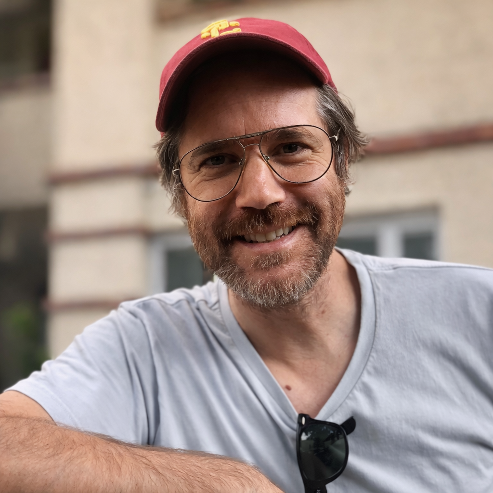

Biogeochemical sensing and AI-powered analytics for real-time ocean observability. Our first market is marine carbon removal — where better measurement means higher-integrity carbon credits and better nature-positive outcomes.
A rapidly growing ecosystem of underwater sensors, autonomous vehicles, smart buoys, satellites, and AI systems is creating the Internet of Underwater Things (IoUT): a digital system for the ocean.
Yet a critical gap remains. Current ocean monitoring systems measure environmental conditions — temperature, salinity, pH, dissolved oxygen, water quality. They rarely measure the biogeochemical processes that determine ecosystem health, carbon cycling, productivity, and resilience.
This gap between what we measure and what we need to manage is the single largest bottleneck across marine carbon removal, aquaculture, conservation, and coastal resilience. Without direct observation of ecosystem function, operators, regulators, and markets operate on inference rather than evidence.
Knowing temperature and pH doesn't tell you whether carbon is being transformed, whether a habitat is healthy, or whether an ecosystem is resilient. Biological processes remain inferred, not measured.
A handful of discrete water samples per square kilometre per quarter cannot resolve the fate of megatonne-scale carbon removal or track the health of dynamic coastal ecosystems. Uncertainty undermines markets and management decisions alike.
Today's approach — pathway-specific sensors, discrete sampling, bespoke models — delivers narrow, incomparable data at high cost. Whether for carbon markets, aquaculture operations, or ecosystem management, you pay for a slice of the picture.
Enthalpic combines next-generation biogeochemical sensing with AI-powered analytics to create a unified observability layer for ocean ecosystems. Our platform measures the biogeochemical processes that determine ecosystem function — carbon transformation, biological activity, and environmental performance — continuously, in situ, in real time.
Just as cloud observability platforms transformed the management of digital infrastructure, Enthalpic enables operators, scientists, governments, and industry to understand and manage living ocean systems through continuous measurement rather than periodic sampling.
The same sensing and intelligence layer serves marine carbon removal today — and aquaculture, biodiversity monitoring, coastal resilience, and offshore infrastructure tomorrow.
Continuous, in-situ observation of ecosystem function within project boundaries — biological activity, carbon transformation rate, and cumulative impact. The same dashboard serves mCDR verification today and broader ocean intelligence tomorrow.
*Data shown for illustrative purposes only — not representative of active deployments.
Our core sensor technology uses quantum-sensitive materials to detect minute biogeochemical signatures from carbon transformations and biological activity. Developed in partnership with Fraunhofer Institute (Start-a-Factory, Berlin). Provides real-time, in-situ observation of ecosystem processes at sensitivities conventional systems cannot reach.
Low-power, in-situ microfluidic platforms for automated collection and analysis of porewater and seawater samples. Enables high-resolution biogeochemical profiling across depth and time for carbon cycling, nutrient dynamics, and ecosystem health assessment.
Probabilistic models that fuse sensor data with physical priors to quantify ecosystem function, carbon permanence, and transformation pathway attribution. Pathway-agnostic by design — applies equally to OAE, biomass, blue carbon, aquaculture, and natural ecosystem monitoring.
Quantum sensor and microfluidic technology developed in partnership with Fraunhofer Institute (Start-a-Factory, Berlin). AI ecosystem intelligence is in early prototyping.
Continuous in-situ measurement and verification for ocean alkalinity enhancement, biomass burial, blue carbon, and direct ocean capture. Our first market — where better observation means higher-integrity carbon credits and stronger project economics.
Continuous sediment carbon dynamics monitoring in mangrove, seagrass, and salt marsh ecosystems. Verification-grade observation for high-integrity blue carbon credit issuance and habitat health assessment.
Real-time observation of water column biogeochemistry for aquaculture operations. Early detection of harmful algal blooms, oxygen depletion, and water quality events through direct biological activity measurement.
Ecosystem health assessment for marine protected areas, coastal resilience projects, and offshore infrastructure monitoring. The same observability platform serves conservation, industry, and regulatory intelligence needs.
Advances in marine sensors, autonomous systems, edge computing, satellite connectivity, and artificial intelligence are generating unprecedented volumes of ocean data. The Internet of Underwater Things is becoming reality — creating the infrastructure for a connected, observable ocean.
Yet most systems monitor environmental state rather than ecosystem function. The next frontier is observability: continuous visibility into the biogeochemical processes that drive ecosystem performance.
Carbon markets are the first to feel this need — buyers and regulators demand direct evidence of carbon removal, not inferred proxies. Aquaculture, conservation, coastal resilience, and offshore industries are close behind. Enthalpic is building the unified sensing and intelligence layer that serves them all, starting with carbon.

Enthalpic was founded by Alberto Robador, an assistant professor for geomicrobiology and environmental biogeochemistry at the University of Southern California (Los Angeles, US), whose research sits at the intersection of microbial energetics, thermodynamics, and environmental sensing.
Alberto is part of the Carbon 13 venture builder program and is developing Enthalpic from LEAP Berlin, within Berlin's Quantum Technology Hub, with ongoing conversations with mCDR project operators and developers, marine biogeochemistry research groups, and ecosystem monitoring partners.
The company is at an early stage, currently focused on sensor prototyping for biological and chemical carbon transformation signals, AI model development, and partnership development with field-deployment and research partners.
Geomicrobiology • Microbial energetics • Thermodynamics • Biogeochemical sensing • University of Southern California
Fraunhofer Institute (Start-a-Factory, Berlin) — quantum sensor development for environmental monitoring
Carbon 13 venture builder program
LEAP Berlin • BERLIN QUANTUM • Developing with EU research and field partners
We envision a future where the ocean is continuously observed, digitally connected, and intelligently managed. Enthalpic is building the sensing and intelligence infrastructure to make that future possible — starting with marine carbon removal, where the need for better observation is urgent and the market is ready.
If you are deploying OAE, biomass, blue carbon, or any marine carbon removal pathway — or if you see observability needs in aquaculture, ecosystem monitoring, or ocean infrastructure — we would like to hear from you.